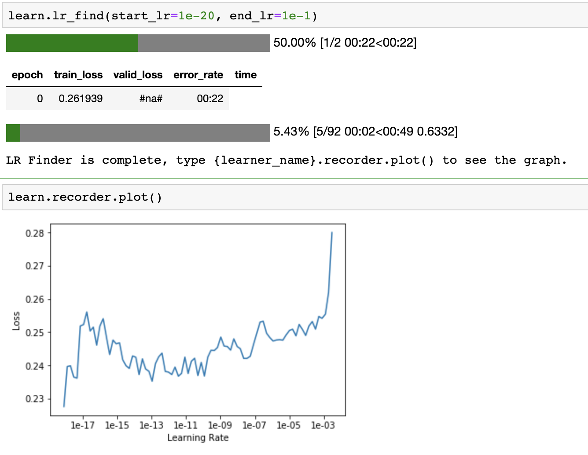
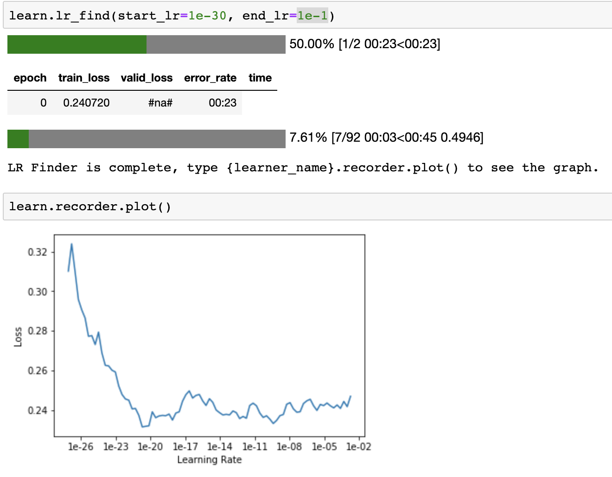
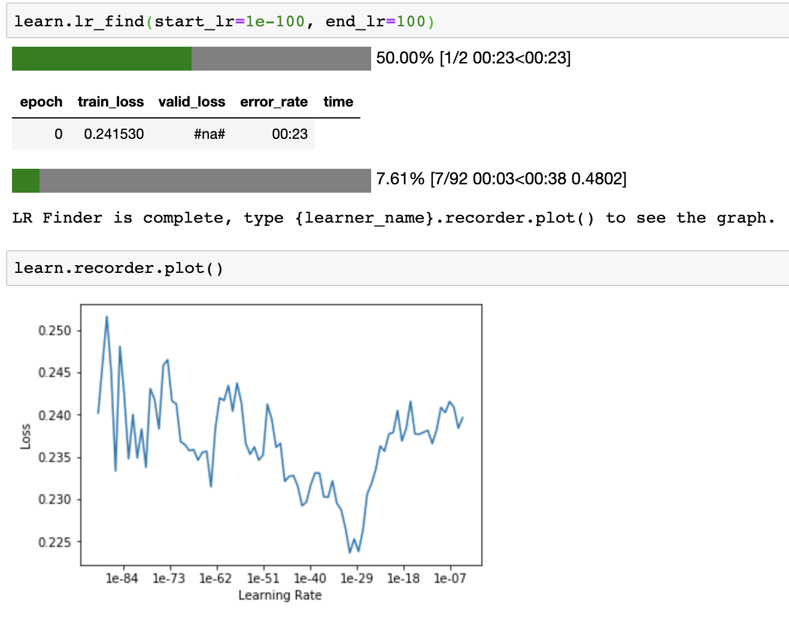
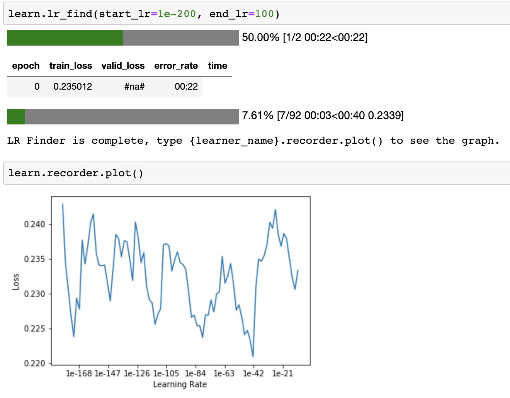
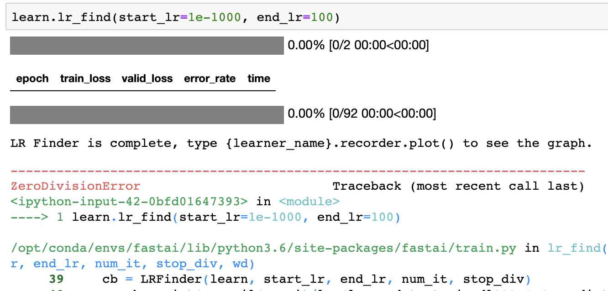
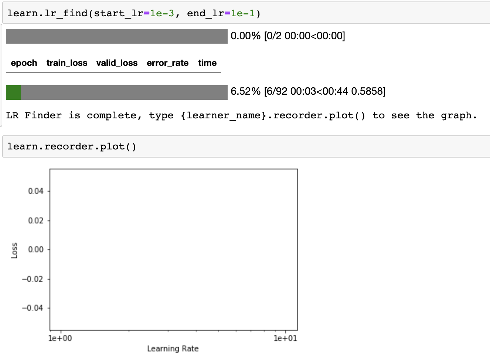
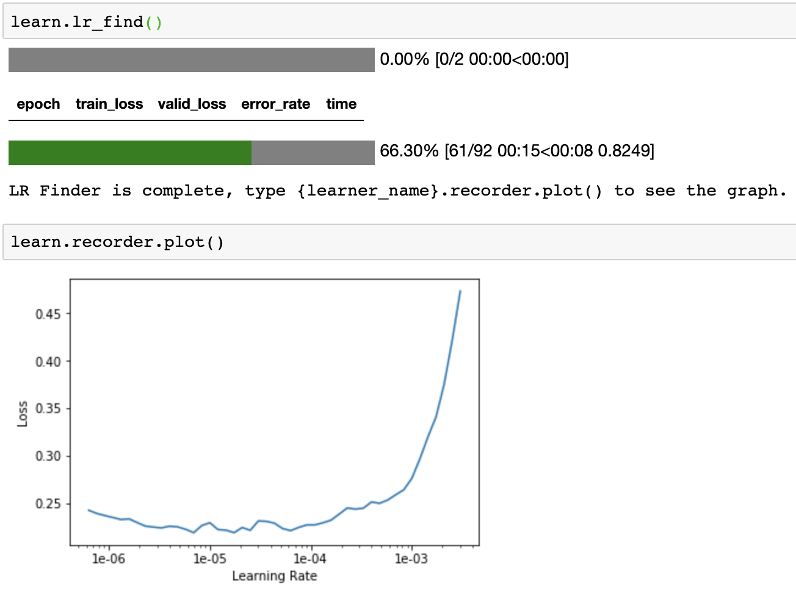
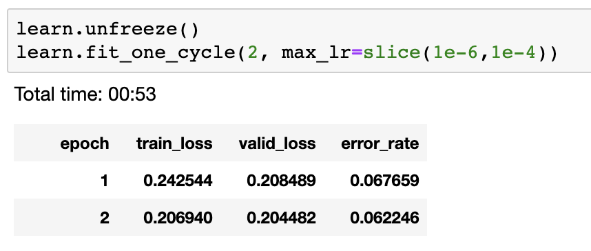

I've learned and clarified a few things about learning rates, which I will have to validate once I have a deeper understanding of these concepts. The first two were from this helpful fastai forum post:
- Each time you run {learner_name}.lr_find() from the fastai library, it uses a random set of data (in "batches") to train the data.
- lr_find() saves the model before it trains on the data, and then loads the model again once it's done. This is why you still have to unfreeze() the model afterwards before you can fit it again (if you want to fit all layers).
The next set of observations were from trying different start and end learning rates (which you only need to do for the actual fit). Here are screenshots of learning rate vs loss plots for different start_lr and end_lr values:




At some point, a low enough learning rate causes a ZeroDivisionError

I then increased end_lr above 1e-3, and lr_find() basically didn't run:

Without any given start_lr or end_lr, lr_find() defaults to start_lr=1e-7 and end_lr=10.

After thinking about all of this for awhile, I realized this: the real benefit of fixing a minimum and maximum learning rate is realized when you are actually fitting the model, not when you are trying to find a good learning rate range to use.
